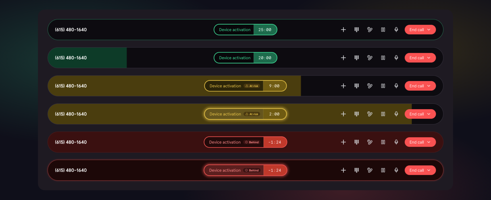
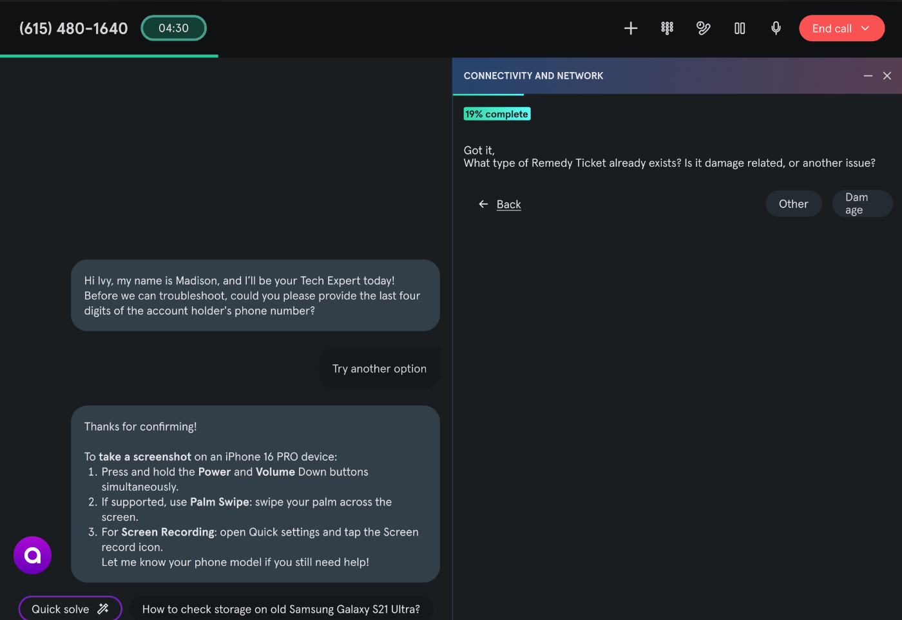
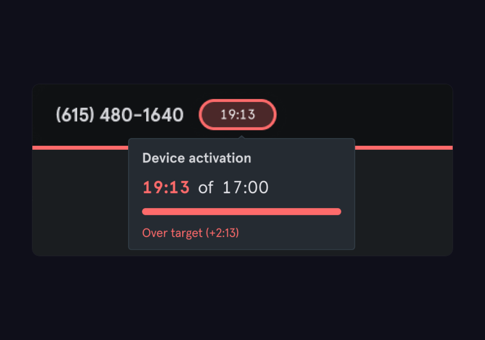
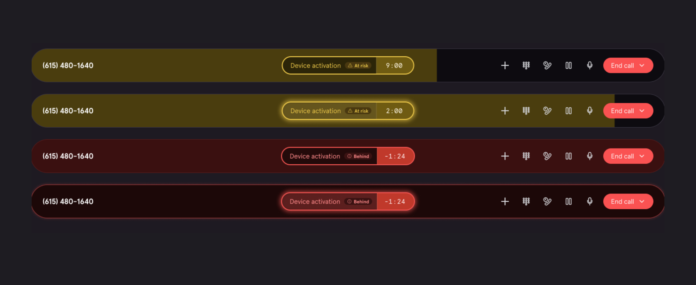
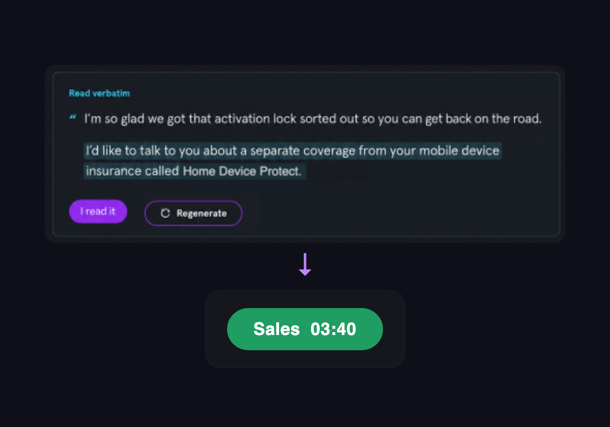

Asurion
Call center agents had no live read on their pace. We shipped a rough timer, learned what it got wrong, and the redesign cut another 21 seconds per call.

The Challenge
An agent is deep into a device activation, the customer is still on the line, and nothing on screen says whether this call is running long. Agents only heard about their pace after the call was over. So we asked: if they could see it in real time, would they pace themselves? No new scripts, no extra coaching. Just a timer.

The First Test
An engineer vibe coded this in a few minutes, reusing an existing pill component in Expert Workspace as a lightweight test. I'm a designer, so of course I asked for a few more days. My partners said ship it and see. They were right.
Early Signals
We piloted with about 14 agents in Orlando in April. It worked better than I wanted to admit.
48 sec
Faster calls in the pilot
+2.9 pts
Resolution rate in the pilot
Held
Sales
What We Learned
By July, pacing was live across two major carrier programs. Agents told us they liked seeing how they were doing, and that they wished they could see it better. Then we walked the floor and saw why.

Problem 01
The pill counted up, and the target sat in a popover. To know how a call was going, agents had to stop and go look. (Not ideal while you're helping someone with their phone.)
Problem 02
Coaches walk the floor looking for agents who need help. From any real distance, that little pill disappeared.
Fix What's Not Working
Show the time left, so agents never have to do the math.
Readable at a glance from the chair, and from across the room.
No popovers and nothing to open. Agents stay in the conversation.

The Solution
This was finally my few more days, and now we'd earned them. In V1.5, the whole call bar fills, shifts from green to amber to red, and counts down from the target. We left the logic alone, so a clean A/B test could tell us what the design was worth on its own.
Impact
In a 50/50 test across 170,000+ calls, V1.5 beat V1 every week. Turns out making it easy to see was worth something. Sales ran slightly lower, so we're keeping an eye on it.
−21 sec
Per call vs. V1 (A/B test)
3 of 3
Weeks V1.5 won
500 hrs
Est. hours saved weekly at full rollout

What's Next · Concept
One timer covers the whole call, so a great sales conversation looks like a slow call. In V2, the agent taps I read it
on the sales script and a sales timer takes over. It's still a concept, so ask me how it goes.
My Role
On this one, it often wasn't me. An engineer built the first version, and my partners pushed us to ship it. I led design from there, working with product, engineering, and operations to turn what each test taught us into the next version.
The Leadership Challenge
Everyone wanted shorter calls, but we didn't start out agreeing on what was making them long, or what a timer should do about it. My worry was the agents. A timer that adds stress or one more thing to check makes a hard call harder. So I kept bringing every idea back to one test: does this help an agent pace themselves without adding work?
How We Worked
Every round followed the same loop: ship the smallest version that could answer a question, measure it, walk the floor, then decide what to change. Four turns of that loop so far:
Calls got faster → Scale it
Coaches couldn't see it → Design V1.5
V1.5 won by 21 seconds → Ship it to everyone
Some targets are off → Tune targets
Reflection
Ship small. The smallest thing that can teach you something is usually enough. Let data earn the polish. V1.5 got its shot because V1 proved the idea. Walk the floor. No dashboard told us coaches couldn't see the pill.
I'll still ask for a few more days. I just wait until after the first test now.